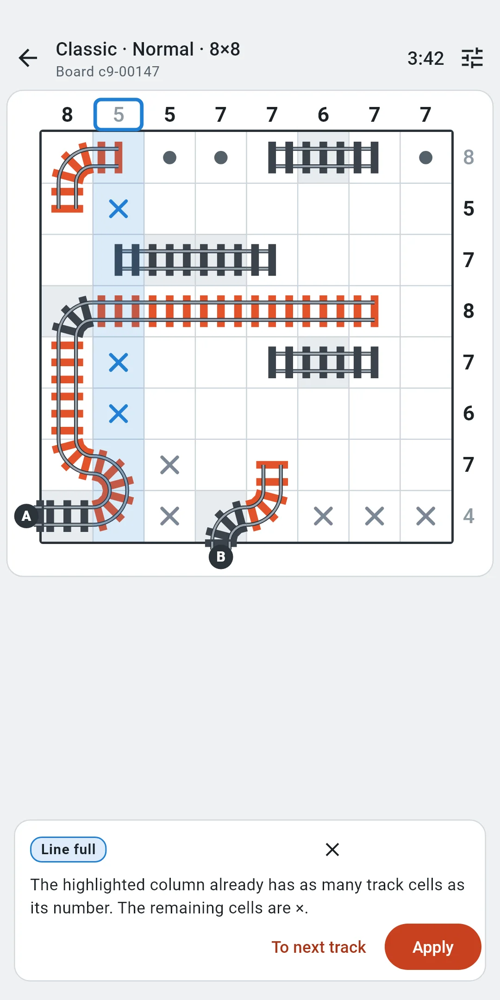
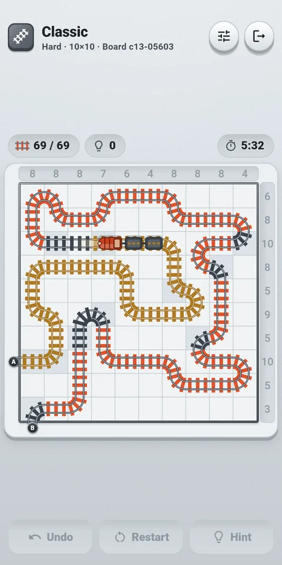
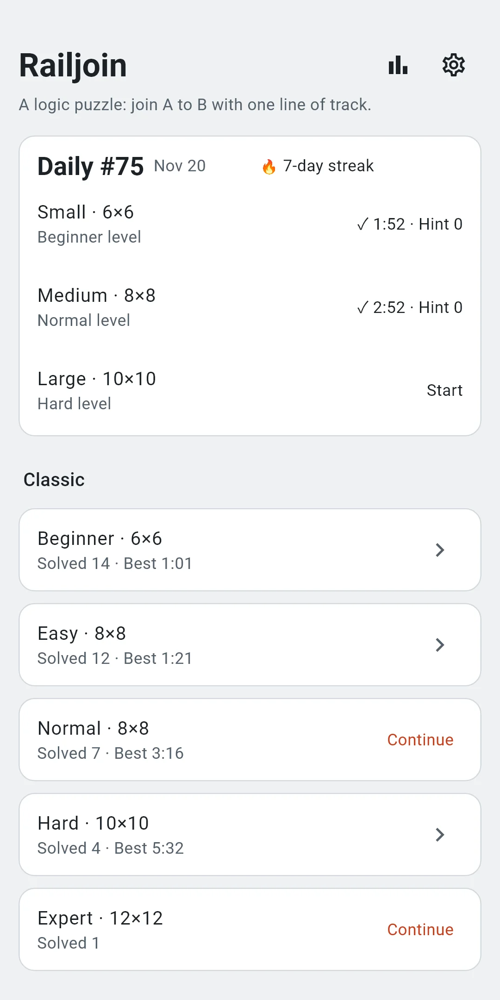
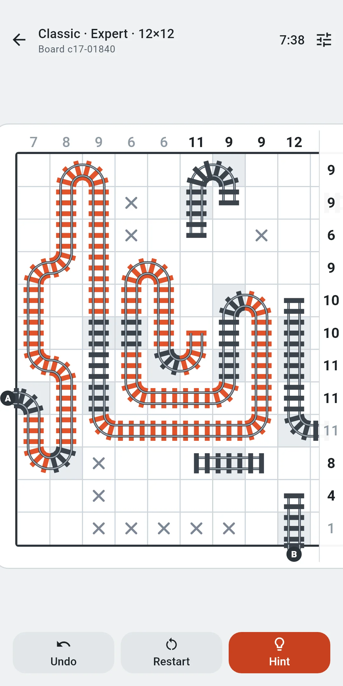
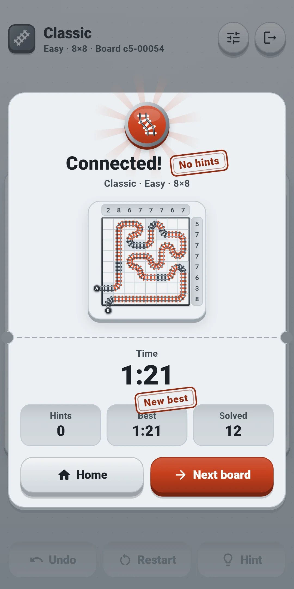
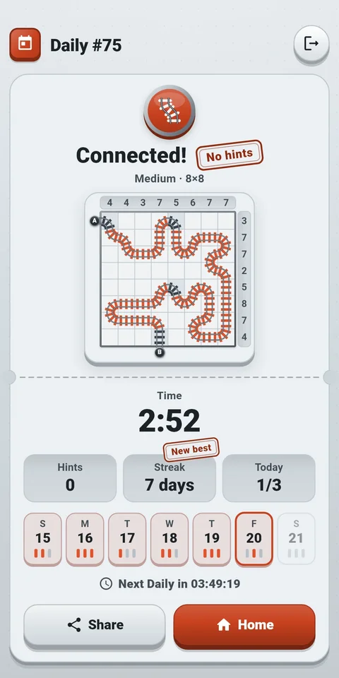
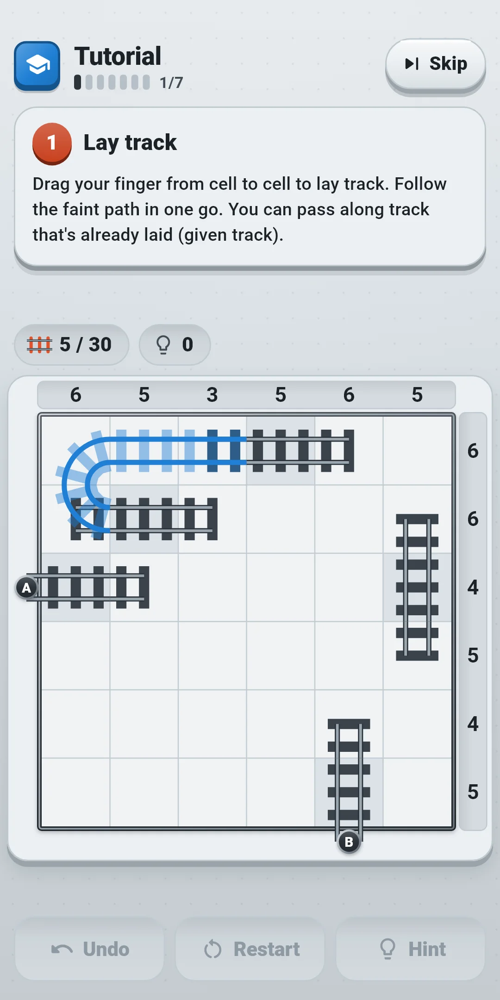

Screenshots







App Info
| App Name | Railjoin |
|---|---|
| Version | 1.0.0 |
| Developer | Willee Project |
| Platform | Android |
Railjoin is a logic puzzle (a train tracks puzzle) in which you join entrance A to exit B with a single line of track. The numbers above and to the right of the board tell you how many cells of that column or row the track passes through. Every board has exactly one solution and can be solved by logic alone, without guessing.
- There are no lives and no mistake counter. Hints are free and unlimited, and there is no time limit.
- No sign-up, no login. The first time you open the app, a short Tutorial on a 6×6 practice board teaches the controls and the rules. You can end it at any time with Skip.
- The game works without an internet connection. The internet is only used for the banner ad at the bottom of the screen and for sending usage statistics and crash reports.
- The app follows your device language. It supports English, Korean, Japanese and Chinese (Simplified and Traditional), and you can also pick a language in Settings.
1. Rules
- The board is a square grid. Above each column and to the right of each row there is a number: how many cells in that line the track passes through.
- Entrance A is on the left of the board and exit B is below it. The track is one unbroken line from A to B.
- A cell the track passes through is joined to two neighboring cells (straight or bending). There are no branches, no crossings and no closed loops, and you can't join diagonally.
- A few cells already hold a piece of track (given cells). You can't erase or change them. The cells at A and B are always given cells.
- When the track runs from A to B in one line, there is no other track, and every number matches, the board is solved. You don't have to place every × and ●.
- Every board has exactly one solution and can be solved by logic alone. You will never get a board where a cell can only be settled by guessing.
- There are no lives and mistakes aren't counted. A wrong track doesn't end the board, and you can undo as much as you like.
- Best times count only boards solved without hints. Solve a board without hints and the result gets a No hints stamp.
Reading the board
- The numbers are above the board (columns) and to its right (rows). A and B are round tags outside the board: A on the left, B below.
- Given cells have a different floor color and a piece of track already in them. Given track has differently colored ties, so you can tell it from the track you lay, which has vermilion ties.
- × is your own mark for "no track passes through this cell". ● is your own mark for "track passes through this cell (direction not known yet)". You don't need them to finish, but marking what you've worked out makes the remaining cells easier to see.
- When a line has as many track cells as its number, the number turns pale (a ● counts as a track cell too). A line whose number is already met by the given cells alone looks pale from the start.
- Rule conflicts (on by default): a row or column over its number gets a red outline around its number, and a branching cell or a closed loop turns its track red and gets a red outline around the cell. Only the rules are checked; the answer is never used.
- Lines tinted light blue, cells ringed with a dotted outline and dotted lines are where a hint is pointing. Wrong marks are pointed out with a red outline (section 4).
2. Solving tips
The Tutorial teaches the basics on a single 6×6 board in seven steps: Lay track → Place × → Place ● → Rule conflicts → Undo → Hint → On your own. Each step highlights where to act, and only the highlighted spots respond. The practice board doesn't count in your records, and when you finish, Start playing takes you to the home screen. Hints label the technique they use. From the easiest:
- Only two ways: if track passes through a cell and only two of its sides are open (the track can leave through them), it joins both.
- Dead end: a cell with fewer than two open sides can't have track through it. It's ×.
- Line full: once a row or column has as many track cells as its number, all its remaining cells are ×.
- Rest is track: if a row or column needs every one of its remaining cells to reach its number, track passes through all of them (●).
- No loops: joining the two ends of the same piece would close a loop, so those two aren't joined.
- No early finish: joining the piece that leads to A with the piece that leads to B would end the path. Join them only when that makes every number match; until then, don't.
- Crossing parity: each time the track crosses a line running across the board (between two neighboring rows or columns), it switches sides. If A and B are on opposite sides of the line, the track crosses it an odd number of times; if they're on the same side, an even number. When only one place to cross is left, whether the track has crossed an odd or even number of times so far tells you if it crosses there.
- Neighbor check: looks at neighboring cells. If track through a cell with only two open sides would run on into its neighbor and push the line over its number, that cell is ×. Conversely, if leaving a cell empty would block its neighbor and leave the line with fewer possible track cells than its number, track passes through that cell (●).
Beginner and Easy boards can be solved with the first four (from Only two ways to Rest is track). Normal boards need up to No loops and No early finish, Hard boards up to Crossing parity, and Expert boards up to Neighbor check. The hint explains any harder technique with its reason (section 4).
3. Controls
- Laying track: drag one finger from a cell to a neighboring cell and track is laid between them. When your finger enters the central square of a neighboring cell (70% of the cell's width), the track is joined up to that cell. A shaky finger near a cell edge won't join by mistake, and if you drag fast and skip cells, the cells your finger passed over fill the gap. One drag can lay many cells; diagonals aren't joined.
- Backtracking: while laying, drag back along the path you just drew and the track you just laid is erased.
- Erasing: start a drag on track you laid yourself and, instead of extending it, the drag erases the track it follows. If you backtrack while erasing, the erased track comes back; if you return to the first cell, the drag ends up having done nothing. If you meant to extend the end of a track but your finger landed one cell before the end cell, dragging through the end cell into an empty cell doesn't erase anything: the track is extended from the end cell.
- Blocked spots: you can't cross a cell marked ×, the sides of a given cell that its piece doesn't use, or the edge of the board. You can drag along given track, and it is never erased. A ● cell doesn't block.
- While dragging: a ring larger than your finger marks the current cell, the row and column of that cell are lightly highlighted, and their numbers get an outline. Track laid in this drag is drawn in a different color, so you can see how far you've got even under your finger.
- Placing × and ●: each tap on an empty cell cycles × → ● → cleared. You can't place them on cells the track passes through or on given cells. You can't lay track into a cell marked ×.
- Undo: Undo below the board takes back your last action. You can undo as much as you like; one drag, one × or ● placed, and one hint Apply each take one undo. Undo carries over even if you close and reopen the app.
- Zoom and move: spread and pinch two fingers to zoom in and out, and drag with two fingers to move the board. One finger never moves the board: it always lays track or taps. When a second finger touches, the drag in progress is canceled as if it never happened, and nothing else is accepted until all fingers are lifted, so a zooming finger never lays track or places a ×.
- Boards with tiny cells: a board whose cells would be too small when the whole board is shown (on most phones Expert 12×12, and on narrow phones Hard 10×10 too) opens zoomed in. You see the side with entrance A first, and pinching with two fingers shows the whole board. While you drag zoomed in, the board moves by itself when your finger reaches the edge of the screen. The numbers above and to the right stay stuck to the screen edges while you move, and the A and B tags move with the board.
- Press to zoom: while the cells look too small (smaller than about 5 mm), you can only look. Press and lift one finger and the spot you touched grows over 0.35 seconds, easing in and out. Lay track and place × and ● on the enlarged board. With Reduce effects on, it grows at once without movement.
- When you finish the track, the whole board comes into view, light runs from A to B, a small train follows along the track, and then the result appears. Don't want to wait? Tap the board to go straight to the result. If you turn Train on completion off or Reduce effects on, the result appears right away without the train.
On the left of the top bar are the mode icon and title (Classic, Daily #12), with the level, board size and board number in small text below (for Daily: the board kind, board size and board number). On the right are the Quick settings button and, at the far end, the door-shaped Exit button. The row of small boxes just above the board shows, from the left, the track cell count (cells joined on both sides / track cells in the answer) and the hints used, with the time at the right end (hide it with Show timer in Settings).
| Button | What it does |
|---|---|
| Quick settings | Opens a sheet to change effects and assistance (sections 5 and 8) right in the game. Drag it down or tap outside it to close it |
| Exit (door) | Goes back to the home screen. The board you're solving is saved automatically |
The toolbar below the board:
| Button | What it does |
|---|---|
| Undo | Takes back your last action. It's grayed out when there is nothing to undo |
| Restart | Opens a sheet to choose Restart this board or New board (below) |
| Hint | Shows the next move and why (section 4). Once you've used hints, the number is added, like Hint 3 |
The Restart sheet:
| Option | What it does |
|---|---|
| Restart this board | Clears all the track you laid and your × and ●, and empties the undo history. In Classic the time and hints start over too; in Daily the time and hints you used that day keep counting. It's grayed out on an untouched board |
| New board (Classic) | Drops this board and gives you another board of the same level. A dropped board doesn't count as solved. Not available in Daily |
4. Hints
Hint shows the next step of the solution together with its reason. Hints are free and unlimited. The bubble appears where the toolbar is and hides it for a while. If the bubble would cover the cells, lines or numbers the hint points at, it moves to the top of the board and the toolbar comes back.
You press the buttons in turn: Hint → Show more → Apply.
- Step 1: Hint shows where to look. The lines the reasoning is based on get a light blue tint and an outline around their numbers, and the cells it is based on get a dotted ring (Crossing parity draws a dotted line across the board). The tag in the bubble names the technique (section 2). For example: "Compare the highlighted row's number with the cells the track passes through."
- Step 2: Show more shows what to place on the board in a faint style, along with the reason. Track to lay appears as faint track, × and ● to place as faint × and ●, and sides that must not be joined as a short bar. Reasons never use row or column numbers; they point to what is highlighted. For example: "The highlighted row already has as many track cells as its number. The remaining cells are ×."
- Step 3: Apply lays the track or places the × and ● as shown. One undo takes it back.
- To next track (at step 2): places all the × and ● up to the next step that lays track at once, then shows the reason for that track step. One undo takes it back.
- Wrong marks come first (tags Wrong track, Wrong ×, Wrong ●). A track that isn't in the answer, a × on a cell that holds track in the answer, or a ● on a cell with none is pointed out, starting with the one you placed first. The hint goes straight to step 2, and Apply removes that mark.
- If an earlier step isn't visible on your board yet, "First: …" is put in front of the reason to explain it.
- Hints reason only from the given cells and the track you've laid that matches the answer. Your own × and ● are never used as evidence, so hints are always right, even if you haven't placed any × or ● or some of yours are wrong. Steps whose results you already have on the board are skipped.
- The number of hints you've used shows on the hint button, in the row just above the board and in the result, and is included in the Daily share text. A hint is counted when you ask for it (step 1). Show more, Apply and To next track aren't counted separately; closing a hint and asking again counts one more.
- Tapping the close button (X) on the bubble, placing track, × or ● on the board, or undoing closes the hint.
5. Assistance
Turn these on or off under Assistance in Settings. During a game you can change them right away in Quick settings.
- Show rule conflicts (on by default): shows rows or columns over their number, branching cells and closed loops (section 1).
- Show mistakes instantly (off by default): marks track that doesn't match the answer, a × on a cell that holds track in the answer, and a ● on a cell with none, right away, with a red circle with a × in it (the same three as a hint's wrong marks). When it's off, wrong marks are only pointed out by a hint. A board solved with it on still counts as No hints and toward best times if you used no hints.
- Show timer (on by default): shows the time at the right end of the row just above the board. Turning it off only hides the time; it keeps running. The time a board took is shown in the result.
The Tutorial board ignores these settings: it always shows rule conflicts and never marks mistakes instantly.
6. Modes
Home
At the top are the app icon and name, a Records button with a trophy and your number of boards solved, and a gear Settings button. Below them are the Classic card and the Daily card, in that order. To play the Tutorial again, use Replay the tutorial under Assistance in Settings (section 8).
Classic — pick a level, no time limit
- On the Classic card on the home screen, pick a level and tap the big button below (Start, or Continue if you have a board in progress). The five level tiles show the level number (1 to 5) and board size, and the selected one is dark. Below them, the board preview shows your board in progress or the next board still empty; swipe it sideways to move to the neighboring level. Under the preview are the level name and board size, the Best time (boards solved without hints only) and the number Solved. If you're new, start with Beginner (1).
- Levels differ in board size and in the hardest technique (section 2) a board needs. All levels are open from the start, and each level has 2,000 boards.
| Level | Board size | Hardest technique needed |
|---|---|---|
| Beginner | 6×6 | The first four (Only two ways to Rest is track) |
| Easy | 8×8 | The first four |
| Normal | 8×8 | No loops, No early finish |
| Hard | 10×10 | Crossing parity |
| Expert | 12×12 | Neighbor check |
- Boards come at random from the ones you haven't solved yet. Solved boards don't come back until you've solved every board of that level; then the boards you solved longest ago come back first.
- When you finish a board, you hear a sound and feel a vibration (if they're on), a small train runs from A to B, and then the result card (Connected!) appears. It shows a picture of the finished board, the time, Hints, Best (boards solved without hints only; a New best stamp if you beat your record) and the number of boards Solved. Solving without hints earns a No hints stamp. Next board takes you to the next board of the same level, and Home takes you back to the home screen.
- The board you're solving is saved automatically. Leave and come back, or close and reopen the app, and you continue where you left off on each level. The clock runs while the board screen is open; it stops while you're away from the app or the screen. If you leave a board without touching it, no time is kept and the same board waits for you.
Daily — today's three boards
- Every day everyone gets the same three boards: Small (6×6), Medium (8×8) and Large (10×10), with the difficulty of the Beginner, Normal and Hard levels. Everyone in the world solves the same boards on the same day (by the device date). A new Daily opens at midnight, device time. If you keep the app open past midnight, the home screen switches to the new day by itself.
- Each board is solved and recorded separately. The rules are the same as in Classic (no lives, unlimited hints).
- There is no time limit; the time you've spent so far is shown at the top of the board screen (you can hide it in Settings).
- Within the same day you can leave and continue later. Restart this board keeps counting the time and hints you've used that day (it's the only restart option). When the day changes, yesterday's unfinished boards disappear and new ones open.
- Finishing at least one of the day's three boards keeps your Streak going; skip a day and it resets.
- The Daily card on the home screen shows the Daily number and today's date, your streak (🔥), today's three boards and the seven days of this week. Each board tile shows its name, size and status (Start, Continue, or for a solved board ✓ with the time). Tap it to play the board or see its result. Each day of the week shows the weekday, the date and three railway ties, one for each of that day's boards. The tie of a solved board is vermilion, and today has a vermilion outline.
- The result screen shows a picture of the finished board, the time, Hints, Streak (days), how many boards you solved Today (for example 2/3), the seven days of this week and the time until the next Daily. Solving without hints earns a No hints stamp, and if the board you just finished takes your streak past your longest one, a New best stamp goes on the streak. Use Share to send your result (one board at a time). For example:
Railjoin Daily #12 · Medium ✅ 3:41 0 hints 🔥 5-day streak
#12 is the Daily number, followed by the board kind and the time (minutes:seconds, or hours:minutes:seconds after an hour). "Railjoin Daily" on the first line is the same in every language. The second line is the hint count and the third line is your streak (only from two days on). The board itself isn't included, because it would give away the answer. The first Daily is #1 and the number goes up by one each day, so the same number and board kind mean the same board.
7. Records
Open them with the trophy Records button at the top right of the home screen (it also shows your number of boards solved).
- At the top: Solved, the total across Classic and Daily, and the count for each mode
- Daily: Streak, Longest streak, Days solved and boards Solved. Skipping a day ends a streak.
- Classic: for each level (with its board size), the number of boards Solved, the number solved with No hints, the Best time (boards solved without hints only) and the Average time (all boards solved). Levels with no solved boards show "-" for times.
8. Settings
Open Settings with the Settings gear at the top right of the home screen. There are three groups. During a game, the Quick settings button changes the first two groups right away.
Sound and effects
| Item | What it does |
|---|---|
| Sound effects | Turns sounds on or off: laying and erasing track, separate pieces joining, placing and clearing × and ●, completing a line's number, rule conflicts, hints, undo, finishing a board, the running train, the result and buttons |
| Vibration | A short buzz when you lay track, a lighter one when you erase it or place × and ●, two taps when a line's number is complete, two short heavy taps for a rule conflict and a long buzz when you finish a board. Buttons give a light tap too. Turn it on or off |
| Reduce effects | Tones down all effects at once. While it's on, Glow when joining, Train on completion and Ticket confetti below act as if they were off (their switches are grayed out and keep their value), and press to zoom grows at once without movement |
| Glow when joining | Cells light up briefly and sparks fly at the joint as you lay track. This also covers the light when pieces join, when a line fills up and when you finish a board. On by default |
| Train on completion | When you finish, a train runs from A to B before the result. Turn it off and the result appears right away. On by default |
| Ticket confetti | Ticket scraps burst three times over the result screen. On by default |
Nothing ever shakes the whole board.
Assistance
| Item | What it does |
|---|---|
| Show rule conflicts | Shows rows or columns over their number, branches and closed loops. On by default |
| Show mistakes instantly | Marks track, × and ● that don't match the answer right away. Off by default |
| Show timer | Shows the time in the row just above the board. On by default |
| Replay the tutorial | Plays the Tutorial again. The practice board doesn't count in your records, and finishing or skipping returns you to Settings. Not available in Quick settings |
General
| Item | What it does |
|---|---|
| Language | Follow Device language (default) or pick one from the list (English · 日本語 · 한국어 · 简体中文 · 繁體中文) |
| Privacy options | Reopens the ad consent form. Only shown in regions that require consent (such as Europe) |
| About | Version, this guide (How to play), Privacy policy and Open-source licenses |
The screen colors follow your device's dark mode setting. There is no switch inside the app.
9. Ads and your records
- A single banner ad sits at the very bottom of the screen. On the board screen there is a gap between the toolbar and the ad so you don't tap it by accident. During the Tutorial the ad is removed and its space left empty. This banner is the only ad. The game works offline; the internet is used only for the ad and for usage statistics and crash reports.
- In regions that require consent (such as Europe), an ad consent form appears the first time you open the app. You can change your choice later under Privacy options in Settings.
- There are no in-app purchases.
- Your records and settings are stored on your device. If Google backup (Android Auto Backup) is on, they're included in it, so you can carry on after changing devices. Uninstalling the app deletes the records on the device.
- For details, see the Privacy Policy.